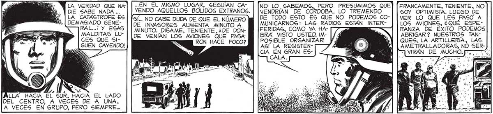
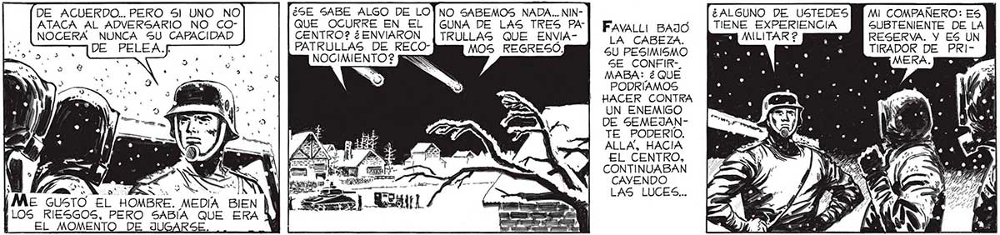

LA VERDAD QUE NA DIE SABE NADA ... LA CATASTROFE ES DEMASIADO GENEFAL... Y ESAS MALDITAS LUCES QUE 51GUEN CAYENDO! NO LO SABEMOS, PERO PRESUMIMOS QUE] (FRANCAMENTE, TENIENTE, NO 83 VENDRÍAN DE CORDOBA. LO TREMENDO 50Y OPTIMISTA. LUEGO DE DE TODO ESTO ES QUE NO PODEMOS co-| | ver LO QUE LES PASO A MUNICARNOS: LAS RADIOS ESTAN INTER- | |LOS AVIONES, ¿QUÉ ESPEFERIDAS, COMO YA HA- 1/4 RANZA DE ÉXITO PODEMOS ..EN EL MISMO LUGAR, SEGUÍAN CAanida AQUELLOS BOLIDOS EXTRAÑOS. . NO CABE DUDA DE QUE EL NÚMERO DE INVASORES AUMENTA AMNNUTO A MINUTO. DIGAME, TENIENTE,¿DE DONDE VENIAN LOS AVIONES QUE PASA RON HACE POCO? BRA VISTO USTED. IM- ABRIGAR 2 NUESTROS TANPOSIBLE ORGANIZAR QUES, LA ARTILLERÍA, LAS ASÍ LA RESISTEN- AR, 2 E] AMETRALLADORAS, NO SER). CIA EN GRAN ES 0) LVIRAN_DE MUCHO. Js CALA DE ACUERDO... PEKO 51 UNO NO ATACA AL ADVERSARIO NO CONOCERA NUNCA SU CAPACIDAD ¿ALGUNO DE USTEDES PM MI COMPAÑERO: ES QUE OCURRE EN EL |GUNA DE LAS TRES PA] Fai Bazo | TIENE EXPERIENCIA PM SUBTENIENTE DE LA CENTRO? ¿ENVIARON | TRULLAS QUE ENVIA- | “¡a Caseza, MILITAR 2 pasa RESERVA. Y ES UN PATRULLAS DE RECO- MOS REGRESÓ. A ] RÁDOR DE PRI NOCIMIENTO ? [5 5U PESIMISMO SE CONFIR-. » . E NERA. MABA: ¿QUE PODRÍAMOS HACER CONTRA UN ENEMIGO DE SEMEJANTE PODERÍO. ALLA, HACIA EL CENTRO, y y. CONTINUABAN ; A | $ CAYENDO y E a LAS LUCES... Me GUSTÓ EL HOMBRE. MEDÍA BIEN | LOS RIESGOS, PERO SABÍA QUE ERA ll EL MOMENTO DE JUGARS BIEN. LO PONDRÉ AL MANDO DE LOS SOBREVIVIENTES GIVILES DE LA ZONA: YA A .ERA EN VERDAD MUY ESCASA PERO EN TRATÉ DE OPO- |UN MOMENTO COMO AQUEL HABÍA QUE NERME, PERO ME | APROVECHARESTE... 9l...¡5l, Sí SEÑOR! PERO... ] AQUÍ” TIENE, JINETAS DE CABO. SE HAN PRESENTADO UNOS CONTUVE, FAVA LO TODO. PONGASELAS, Y HAGAGE CAR qa dei MENTIDO: YO ERA GO DE LOS CIVILES: EL CABO RESERVISTA, Y EN AMAYA LES DARA ARMAS Y : EL ALTILLO GUAR- > TODO LO QUE HAGA FALTA; E DABA. PARA FAS- DESDE AHORA TIDIO DE ELENA | | QUEDAN INCOR QUE DEBÍA LUS- ; PORADOS COTRARLAS, UNAS A MO MILICIANOS. CUANTAS COPAS Y MEDALLAS G6GANADAS EN TORNEOS DE TIRO. COSTABA ADAPTARSE A CAM, MI EXPERIENCIA... . BIOS QUE SOBREVENÍAN CON TANTA RAPIDEZ. NO HA CÍA UN DÍA Y MEDIO, YO NO...

